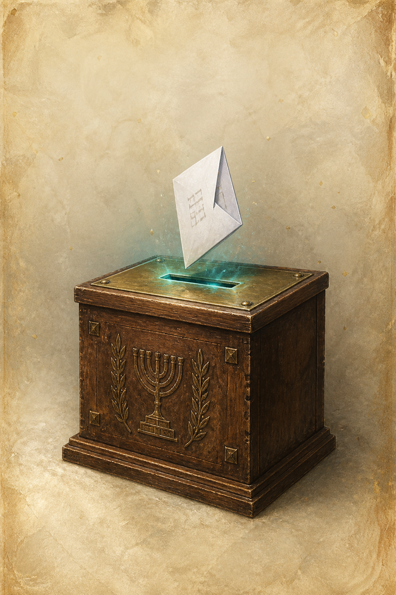
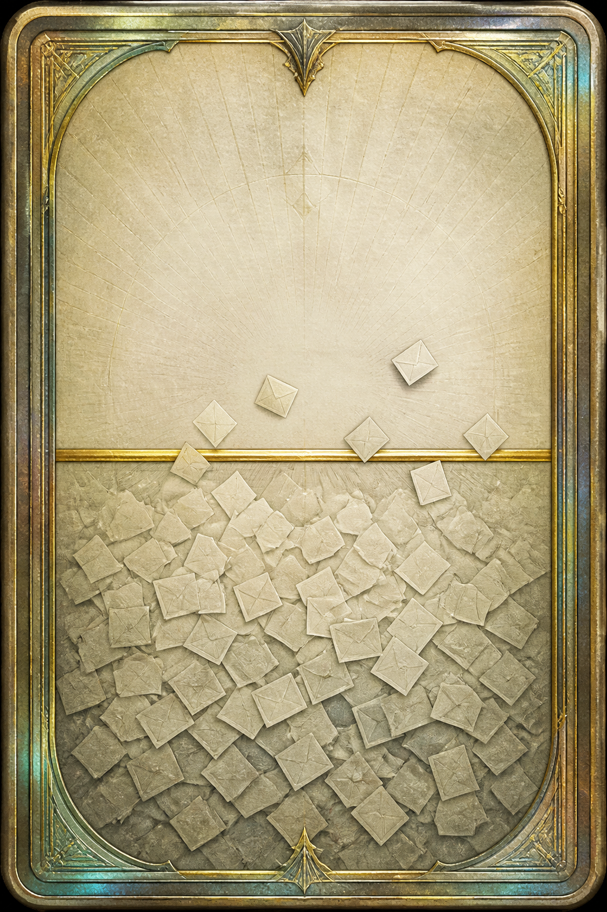
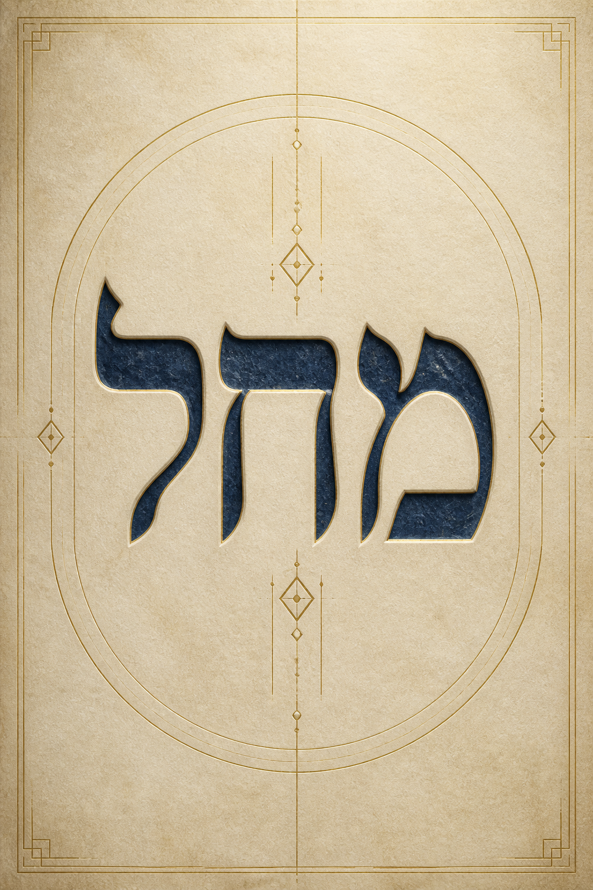

Israeli Elections 2026
And why a pack of cards is the way to get them there — knowing who they are voting for.
1 · Voting % · the background
46.7%
of 18–24s voted after 2021.
74.9%
of 65–74s did.
Knesset Research and Information Center. National turnout in 2022: 70.6%.
Why that number matters
Young Israelis vote more than young Europeans, and the youth rate has been rising. They still vote far less than older Israelis. That is the issue we are in the room for.
Why it matters this year
~600k
595–640 thousand people aged 18–22. 8.7% of the roll. Election day 27 October 2026.
“But they say they will vote”
IDI, May 2026. Intention surveys always run hot. In 2013 the same institute saw ~88% intend, ~92% later say they voted — official turnout was 67.8%. Ages 18–22 were already the most likely to stay home.
Working assumption
Even if 2026 is a few points above 46.7%, it is still low versus older adults. And even the ones who show up often do not know the list. Two jobs: get them there, make the slip informed.
2 · They do not know who to vote for
That was me. A vibe is not a platform. My little brother does not know who to vote for. Hadar Muchtar — same room. This is not a survey. This is the product.
The young-voter problem
War. Load. Enough already. TikTok is full of viral fake news. Some are afraid to show an opinion — at least on one side. A lot of new voters. Not a PDF audience.
Why not “ask your parents”
A parent lecture is the wrong teacher for this age. Parents are emotional and already decided. That is not a syllabus. That is a fight.
The solution
How do you teach them to vote properly — without a parent, a party ad, or a TikTok? Knowledge they chose to flip. Fake news is another reason this is the job: if they know the list, a fake has less room.
Why they are still the target
If anyone can move six seats without knowing who sits in slots 1–20, it is this group. Older voters already show up. This group does not — and when they do, the feed is their civics class.
What characterizes them
Gloria Mark: average screen focus is 47 seconds, median 40. Age of wars and TikTok. Variable rewards. If it is not a daily loop, it is a lecture they will not finish.
3 · Local proof — cards already teach Israel
Piece of History. 98-card Israeli history set. Packs of 8. Holos. First edition sold out. People paid to collect — and learned the country’s story. The format works here. We point it at this election, digital and free.
Why the digital maneuver works — Pokémon TCG Pocket
~150M downloads. Extra pack is a quiz, not a shop. Battles optional — we skip them.
STRATEGY · The iron is hot
Tracked TCG sales doubled in 2025. One Piece, Riftbound, Cyberpunk. Sports never left. US politics already has cards. State Makers is the best local proof. Hit it now.
Trait → game
The rip is bait. The back is the lesson. Extra packs come from a 5-minute swipe. A survey can unlock a party pack. Show-up is the outcome.
They already pay for a ladder
Companies spent five figures to sit on top of a public board. ~1M visits. Proof people will waste a lot of money to go viral. This time the spectacle is for a civic cause. Nobody pays.
Therefore
A free digital collect-only TCG of the lists. No battles. No lore. No paywall. Equal sets. The game never picks a side — you may, anonymously. One free pack a day.
PRODUCT · Bait vs goal
Teach Israeli politics well enough that they show up knowing the list. The card back is one lesson — not the only one. Quiz, commons, a party pack: same job. Progression is bound to learning.
Play it



Flip the hero cards · Phone wireframes
Alpha: pack, flip, binder. 28 sourced cards. Three lists across the map, same skeleton. Server pulls the pack — the player does not invent it.
Progression is learning
What do they do? Which list? Both right → extra pack. Optional survey → a pack of that party’s politicians. Daily rip is habit. Literacy is how you get ahead. Streaks and set chase keep them in.
המטרה מקדשת את האמצעים
27 October 2026
If this should leave the room, it needs to be live in September — free, Hebrew, seeded where 18–24 already are.